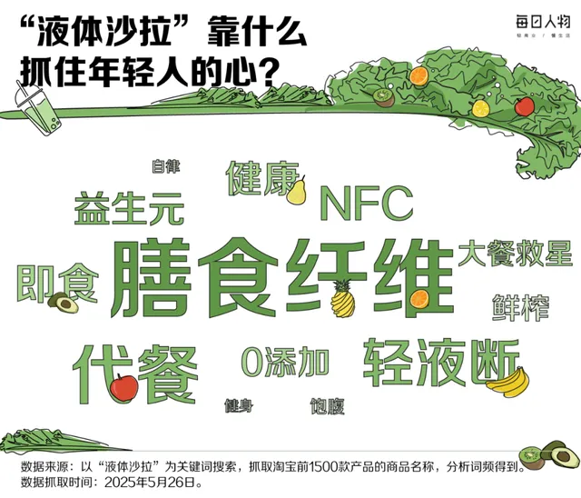
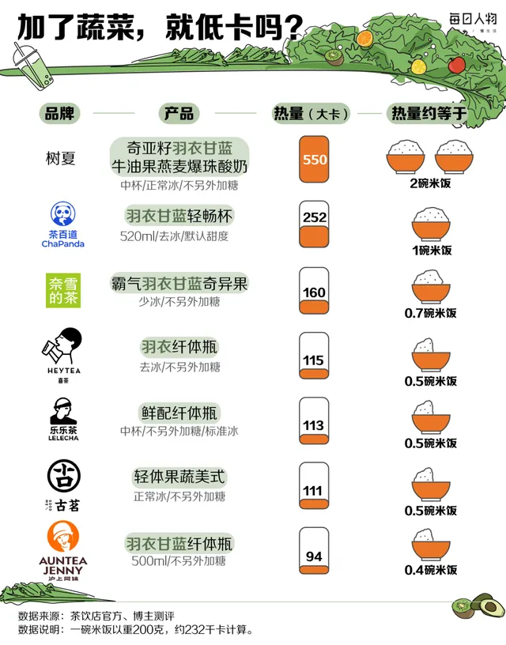
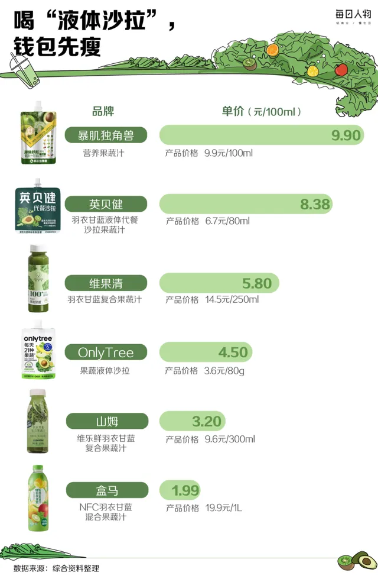

研究综述
果蔬茶、羽衣甘蓝、膳食纤维与“轻体瓶”为什么这么容易被当成更健康？
最近一轮中文互联网茶饮讨论里，羽衣甘蓝小绿水、果蔬茶、轻体瓶、轻畅杯、膳食纤维、饱腹感、代餐感几乎成了一整组会被自动连在一起的词。很多人并不会把它们当成严格的医学或营养学概念去区分，而是更直觉地把这类产品理解成：比奶茶轻、比纯果汁更像在管理身体、比普通果茶更像有功能、甚至在一些忙乱工作日里，比随手吃点别的更像一个“没有那么亏待自己”的选择。也正因为这种理解太顺，它尤其值得被慢慢拆开。研究真正能支持的，通常不是“这杯东西更健康，所以你可以放心高频喝”，而是更克制得多的几层判断：有些果蔬茶确实可能比高糖、重奶、重小料饮品更容易成为相对更轻的替代；膳食纤维、蔬菜原料和更清爽的结构也确实可能改变一杯饮料的主观饱腹感与负罪感；但这些变化并不自动等于它已经接近完整早餐、有效代餐，或足以承担社交平台喜欢暗示的那些身体管理结论。
如果只看传播层，这股热度一点也不难理解。羽衣甘蓝和果蔬茶是少数能同时满足视觉、文案、平台话题、身体想象和争议性的茶饮母题：它们颜色足够鲜明，名字足够像“正在认真生活”，还能和纤维、清爽、轻负担、办公室自救、春夏轻体、久坐补救这些词顺滑地拼在一起。对消费者来说，这种组合的诱惑很强，因为它不像传统意义上的减脂餐那样艰苦，也不像纯功能补剂那样疏离；它仍然是一杯可下单、可拍照、可分享、可带着走的现制饮料，却又看上去像在往更克制、更讲究身体边界的方向靠近。
问题也恰恰出在这里。现代茶饮里最容易制造误会的，从来不是赤裸裸的虚假，而是过度顺滑的推理链：有羽衣甘蓝或果蔬成分，所以更像蔬菜；写了膳食纤维，所以更像完整营养；喝起来没那么甜，所以更适合代餐；名字里带轻体、轻畅、纤维、蔬果，所以更接近“管理身体”。研究视角真正要做的，是把这条太顺的推理链一段一段拆开，看它哪些地方成立，哪些地方只是被平台语言放大得太快。

研究信息卡
研究主题：果蔬茶、羽衣甘蓝、小绿水、轻体瓶与膳食纤维叙事为什么会在现代茶饮中被快速读成“更健康” 涉及问题：纤维与完整蔬果摄入的区别、主观饱腹感、代餐误读、低负担叙事、热量与总糖转移、平台传播语言、替代关系与高频饮用 适合谁看：经常点果蔬茶、羽衣甘蓝小绿水、轻体瓶，会被“纤维”“蔬菜”“轻体”“代餐感”打动，但又想知道研究到底支持到哪一步的人 核心提醒：果蔬茶可能是相对更轻的商业饮料选择，但“更像在管理身体”不等于它已经接近完整代餐，更不等于它可以免于结构判断。
一、为什么果蔬茶、羽衣甘蓝和“轻体瓶”会在这一轮中文互联网里特别容易爆？
因为它们比许多茶饮题材更会同时服务“看起来健康”和“仍然像消费品”这两件事。传统奶茶的快乐太直接，糖、奶、香、厚、满足感都来得很明白，代价也很明白；而果蔬茶与羽衣甘蓝类产品最厉害的地方，是把消费快乐重新包装成一种更像补救、更像自律、更像身体管理的动作。它没有要求消费者离开奶茶店、去学营养学、去认真备餐，只是提供了一杯看上去更容易被自己原谅的饮料。
这种说服力和视觉也高度相关。绿色、透明、高瘦瓶型、果蔬切面、简短命名、轻体轻畅这类词，都非常适合平台传播。它们比传统热奶茶更像“白领白天会拿在手里”的饮料，比普通果汁更容易和“纤维”“身体状态”“轻盈”挂钩，也比真正功能饮料更不生硬。换句话说，这类产品几乎天生适合被读成一种很现代的折中：不是苦行僧式健康，但也不再是完全放纵的快乐水。
而且它们拥有非常强的中文互联网语义优势。羽衣甘蓝早就不是一棵单纯的蔬菜了，它在社交平台上已经被反复训练成“减脂、自律、清体、春夏调整状态”的绿色符号。膳食纤维也类似，它本来是一个营养学概念，却在消费传播里逐渐被翻译成“更有内容”“更顶饱”“更适合身体管理”的即时判断器。品牌当然知道这些词的力量，所以才会不断把它们和茶饮连接起来。

二、为什么“有果蔬”“有羽衣甘蓝”“有纤维”会让人下意识觉得这杯更健康？
因为这些词都来自日常饮食里本来就带正面滤镜的部分。蔬菜通常对应的是“应该多吃”；纤维对应的是“肠道、饱腹、轻盈、规律”；果蔬混合对应的是“天然、完整、少点工业感”；羽衣甘蓝则额外带着一点“懂得选择更进阶健康食材”的平台语气。一旦这些词进入茶饮菜单，饮料就不再只是口味选择，而更像生活方式表达。
这和奶茶时代的逻辑明显不同。过去一杯重奶茶最主要的说服力是“今天值得快乐一下”；而今天很多果蔬茶产品卖的是“今天我至少在努力做一个更聪明的选择”。消费者并不一定真的相信自己正在接受严肃营养干预，但非常容易相信自己离“高糖高负担”远了一点，离“照顾身体”近了一点。这一点点心理迁移，就已经足够推动复购。
更重要的是，蔬果与纤维这些词不会像“药效”“燃脂”“医学改善”那样立刻触发高度警惕。它们听起来更温和、更生活化、更像合理饮食的一部分。也正因如此，它们特别容易制造一种模糊但有力的中间地带：品牌不必说得太满，消费者也会主动往“这杯大概对身体更友好”那边补全含义。
三、膳食纤维在这类产品里为什么特别会被放大？
因为“纤维”几乎是当代中文互联网最容易同时满足专业感和传播效率的营养词之一。它不像维生素那样太宽泛，也不像多酚那样太学术；它既有明确的健康联想，又能和很多切身体验连上——饱腹、轻盈、肠道状态、规律感、没那么容易饿、喝起来更像有内容。对品牌来说，这是非常好用的词：既显得不空，又不会太难懂。
但研究上真正需要提醒的是，纤维这个词进入饮料之后，含义往往会被自动扩张。很多人一看到“膳食纤维”，就会立刻在脑中补出完整蔬果、长期健康饮食、减脂辅助、控糖友好、代餐可行这些后续意义。问题在于，研究从来不鼓励这么一口气连推到底。纤维可以是有意义的变量，但它只是整杯饮料的一部分，而且不同来源、不同剂量、不同饮用情境下，它的现实意义差异很大。把“有纤维”直接翻译成“更像一顿有营养的东西”，很容易走过头。
更现实一点说，饮料里的纤维即便有存在感，也不等于它就能自动复制完整蔬果摄入的全部意义。完整食物里的咀嚼、体积、结构、进食速度、搭配关系，都可能明显影响主观饱腹和长期饮食行为。饮料当然也能产生一些饱腹与满足感，但研究不会轻易把这件事说成等同。

四、饱腹感为什么会成为果蔬茶和轻体瓶讨论里的高频关键词？
因为饱腹感是连接“饮料”和“代餐想象”最短的一座桥。只要一杯饮料让人主观上觉得“没那么空”“能垫一下”“不像普通果茶那么飘”，它就很容易开始被读成更适合工作日、更适合身体管理、甚至更适合拿来部分替代一顿没来得及好好吃的东西。平台传播特别喜欢这种词，因为它既有体验感，又不需要太多专业解释。
这种体感并不一定完全是幻觉。果蔬、一定的体积感、更稠一点的口感、较低的甜度、略强的蔬菜存在感，都可能共同制造出一种“这杯更有内容”的主观感受。再加上纤维这个词本身就和饱腹感有强联想，消费者很容易把自己的短时体验直接翻译成“这杯更像在补营养”。
但研究导向的读法会更慢一点。第一，主观饱腹感和营养完整性不是一回事；第二，短时不饿不等于长期饮食结构更稳；第三，喝完觉得“今天先这样也行”，有时确实是现实生活里的务实折中，但也可能让人高估一杯饮料对整顿饮食的承接能力。真正值得讨论的不是饱腹感是否存在，而是它被解释到了哪里。

五、为什么“代餐感”在这类茶饮里特别危险，也特别有传播力？
因为它刚好踩中现代城市生活最真实的一块缝隙：很多人并不是想系统学习营养，而只是想在忙乱、久坐、通勤、加班、开会这些节奏里，找到一个“至少比随便乱吃好一点”的中间解。果蔬茶与轻体瓶看起来正适合填这个空档。它不像正餐那么费事，也不像完全空热量饮品那样让人心里发虚，所以特别容易被默默赋予“今天先拿它垫一下”的功能。
危险就在这里。研究通常不会愿意把这种产品直接说成代餐，原因并不是要扫大家兴，而是因为代餐意味着更高标准：你在替代什么、频率多高、是否能稳定提供足够的营养支持、是否会导致后续补偿性进食、是否只是把问题从“吃得不合理”挪成“喝得像在认真管理”。如果这些问题都不问，代餐感就很容易只是一个看上去更文明的饮食借口。
我更愿意把很多果蔬茶理解成一种商业饮料里的相对改良路径，而不是一种已经成立的轻营养解决方案。这个表述听起来没那么刺激，但它更接近研究愿意支持的位置：某些情况下它确实比高糖重奶重料饮品更合理，但这不等于它已经足以承担早餐、午餐或长期身体管理工具的角色。

六、研究真正会担心的，不只是这一杯，而是它改变了什么消费习惯
现代茶饮里很多所谓“更健康”的意义，最后都不只发生在单杯层面，而发生在频率层面。果蔬茶与轻体瓶类产品之所以值得认真写，就是因为它们特别容易改变消费者的心理许可。过去面对奶茶，很多人会天然保留一点犹豫；而面对羽衣甘蓝、纤维、小绿水、轻体瓶，人更容易放松下来，觉得自己这次不是在放纵，而是在补救。
如果这种心理变化只是帮助一个人把高糖高负担饮料替换成相对更清爽、更克制的产品，那它当然可能有现实价值。但如果它带来的主要后果是：本来不会买饮料的时段也开始买了、本来一周一次变成一周三四次、或者本来会去认真吃点东西的时刻被一杯“看起来更合理”的饮料糊弄过去，那它的长期意义就需要重算。
研究真正谨慎的地方，往往就在这里。它不否认改良，但也不会忽略习惯如何把改良吃回去。很多商业饮料最有力量的地方，不是单杯足够完美，而是它们很擅长让消费者降低心理阻力，提高复购频率。
七、完整蔬果、果蔬饮料和果蔬茶，研究上最需要分开的是什么？
最需要分开的，是“食物结构”和“饮料结构”。完整蔬果进入饮食时，往往伴随着咀嚼、体积、进食节奏、纤维完整性、与其他食物的搭配关系，这些都会影响主观满足感和后续饮食行为。果蔬茶即便加入了蔬果或纤维概念，它依然首先是一种饮料。饮料可以有自己的优势，比如方便、顺口、易进入高频场景；但也正因为它是饮料，消费者很容易在心理上把它归类得比食物更轻松、也更容易多喝。
这也是为什么研究导向的写法通常会特别警惕“喝蔬菜就等于吃蔬菜”这类快速等式。并不是说饮料里的果蔬元素毫无意义，而是说它们所处的形式会改变意义。一旦从“吃”变成“喝”，很多关于饱腹、摄入控制、进食秩序与行为反馈的变量就一起变了。
所以更稳妥的结论通常不是“果蔬茶有没有价值”，而是“它在什么情况下有替代价值、又在哪些地方不该被误读成完整食物的平替”。这个边界越不被说清，消费者越容易高估它。

八、如果把这类产品放回现实生活里，什么时候它算一种“相对更好”的选择？
第一种情况，是它确实替代了更重的版本。比如你原本会点一杯高糖、重奶、重小料、明显甜点化的饮料，而现在换成了一杯更清爽、糖更低、配方更简单、蔬果存在感更清晰的产品，这种变化通常是有现实意义的。它不需要被神化，作为替代关系本身就已经足够成立。
第二种情况，是它帮助你把饮料消费重新拉回“像饮料而不是像甜点”的位置。很多果蔬茶至少在产品语言和部分结构上，确实试图往这边走。这不等于它就变成了完整餐食，而是说它可能比某些高度甜品化饮品更容易进入一个相对克制的日常使用框架。
第三种情况，是你并没有因为“轻体”“纤维”“果蔬”这些词而失去对频率和总量的判断。也就是说，你仍然知道自己喝的是商业饮料，只是它在一些场景下更值得优先考虑，而不是因此把它升级成“工作日可以无限原谅的身体管理工具”。
九、普通读者最实用的判断，不是问它绝对健不健康，而是问哪五件事？
第一，这杯到底替代了什么？ 如果它替代的是重糖重奶高小料饮品，它的意义通常更清楚；如果它只是额外新增消费，意义就要打折。
第二，纤维和果蔬成分是点缀，还是核心？ 不是为了追求一个百分比答案，而是为了避免只凭几个关键词就自动把它想成完整营养方案。
第三，它给你的“顶饱”到底是哪一种？ 是短时不空、口感更有内容，还是你已经把它误读成一顿足够稳的替代？这两者差别很大。
第四，你是不是因为它看起来更健康而喝得更勤？ 很多产品的问题不是单杯，而是频率。
第五，这杯喝完之后，你对下一餐和后续零食更克制，还是更放松？ 这能帮助你判断，它到底是在支持更稳的饮食结构，还是只是在提供一种即时的自我安慰。
十、结论：果蔬茶可能更轻，但“更像在管理身体”不等于“已经接近代餐”
羽衣甘蓝、果蔬、膳食纤维和更清爽的结构，确实能让一部分茶饮比传统高糖重奶产品更值得优先考虑；但“更像在管理身体”从来不等于“已经足够健康”，更不等于“可以把它当完整代餐、高频补给或自动成立的身体解决方案”。 研究更愿意支持的，是它可能在某些替代关系里成为一种相对更好的商业饮料选择；研究不愿轻易支持的，则是把这层相对改良直接扩写成完整健康结论。
继续阅读：羽衣甘蓝为什么会从“绿化带蔬菜”变成茶饮顶流、有奶不等于更轻负担：轻乳茶、鲜奶茶里的蛋白质、乳糖与“更健康”想象、真茶现萃、低糖、短配料表，是否就自动意味着这杯茶饮更健康？、为什么“配料表透明、真茶底、少添加”成了茶饮新热点。
来源参考：Harvard T.H. Chan School of Public Health：Fiber、NHS：Why 5 A Day?、WHO：Healthy diet、站内相关趋势线索与中文互联网聚合讨论：羽衣甘蓝小绿水、轻体瓶、果蔬茶、纤维、饱腹感、代餐感（2025–2026）。